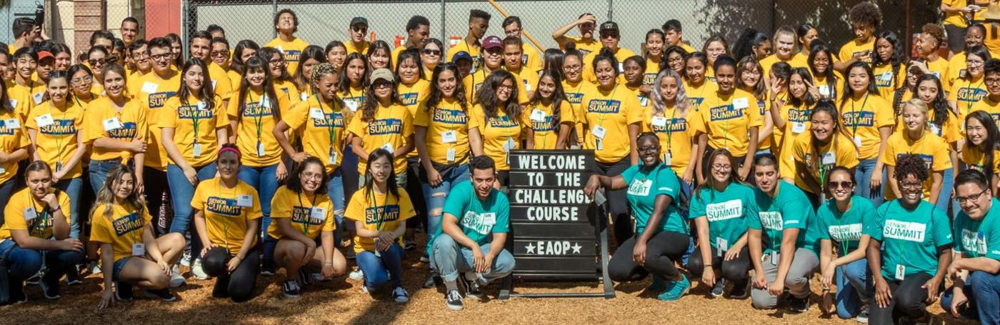
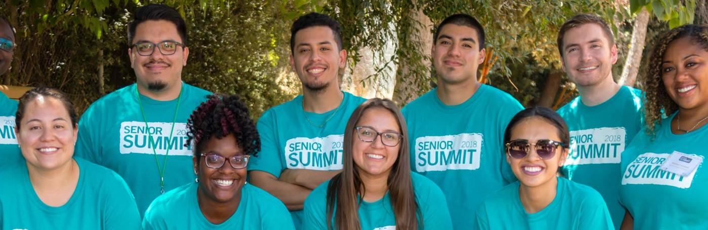
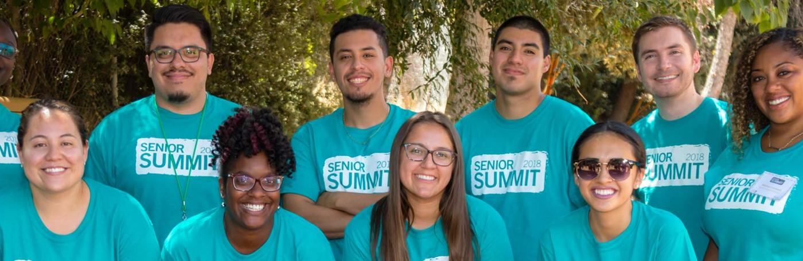

Coranae Washington
I am a visionary and passionate advocate for arts and education. I am a current senior undergrad at the University of California Riverside with a concentration in general music and a future grad student aspiring to obtain my Masters in Education and Teaching Credentials for elementary or middle school level education. I have been exposed to music at a young age, but entering into college was a new platform of music for me. The foundation was fresh and new and opened a new horizon of the possibilities music has in reaching others who need it. I aspire to use my music as a way to aid and rehabilitate students who have encountered challenges in their academic world. Music and education can go hand in hand in helping students grasps onto hard techniques and troublesome subjects in school. I hope to learn more about expanding my business, my art, y education into something that can benefit those around me. Especially the youth who will later represent our nex generation.
While at UCR, I have worked with a outreach organization called Early Academic Outreach Program, who’s goal is to help students get a head start into knowing more about college education, college application process, resources for students who are interested in furthering their professional career. I have tutored over 30 students each session with EAOP’s summer program, focusing on Mathematics for 7th through 8th grade. I have learned how to outreach and have presented motivational speeches for highschool students who have an interest in college education after they graduate. Through EAOP, I have had the honor of mentoring over 90 highschool students, sharing my college education struggles and ways I have had to overcome the challenges in graduating highschool and entering college.
Through workstudy program, I have tutored middle school students in the Moreno Vally School District. I have engaged and collaborated with the AVID program of multiple schools of the district and have facilitated classrooms and assisted with Math, writing skills, language arts, english and award ceremonies. I have a passion for being multidimensional in my career path and each opportunity that I can take to expand my experience in arts and education is a bonus for me.
I love what I do and love the impact that my field has on students, faculty, my community, my family and friends, and myself. I push to keep my vision bright, and hope that my resilience and dedication to my vision will keep me going passed my career’s expectancy. What I hope people who meet me will know is that, I may be underrated, but I’m pushing through stereotypes, obstacles, firewalls, challenges and all to get to where I need to be. I am a visionary, an artist and an educator of not only academics but of my faith and determination. Thank you for taking the time to look into my professional biography and learning more about my passion, goal and plan for my future academic and professional endeavors to come. It is a pleasure to share what I love with people and my community.
Experience
Mentor
• College advising for highschools students
• Mentor through college application process
Education
University of California Riverside
Portfolio



